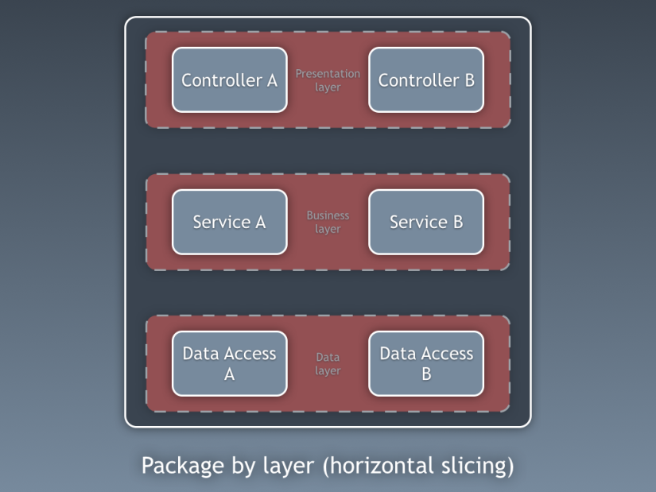
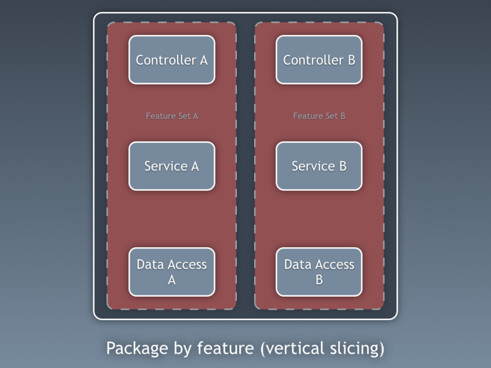
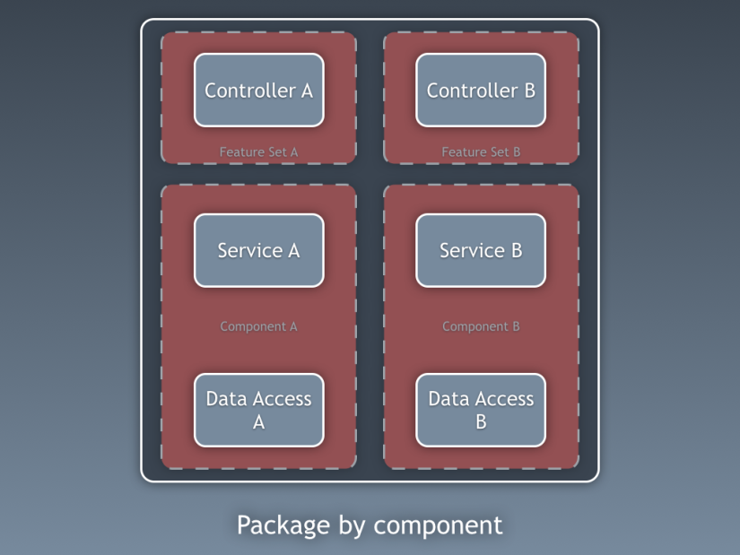

Tại sao phải quan tâm đến vấn đề này?
Thông thường, khi làm việc, ta thường có thói quen xếp các class liên quan lại thành 1 group. Giống như cách trước đây ta vẫn thường làm với Spring, gom các DTO vào 1 cục, gom các Util vào 1 cục, gom các validator vào 1 cục, gom tiếp các controller vào 1 cục.
Điều đó mang lại cho ta những lợi ích gì, đơn giản chỉ là ta sẽ thuận tiện hơn trong việc sắp xếp và tìm kiếm.
Tuy nhiên, điều đó vẫn chưa thực sự đúng. Phân loại các object một cách hợp lý, còn mang lại cho ta nhiều lợi ích hơn thế.
Bài toán
Một ngày đẹp trời, sếp kêu với bạn, "Ê, bên cái dự án kia có function kia kìa, mày sang copy nó sang bỏ vô đây tao cái."
Theo lời sếp, bạn sang đó, nhìn và thấy 1 đống tùm lum tà la. Bạn ko hiểu sẽ phải mang theo những gì, khi nó được xếp vào nguyên trong 1 package. Thôi thì chép đại.
Thế là vô tình, bạn mang theo cả 1 đống rác, mà chính bản thân bạn cũng chả hiểu nó để làm gì, hay nó có liên quan gì đến function mà mình cần copy hay ko.
Giải pháp.
Vấn đề không phải là bạn copy ko được tốt, ko được hay, mà là cách người đi trước phân tích, và tổ chức các package.
Điều bạn mong muốn là gì, copy 1 phát, và nó mang đầy đủ các tính năng mà mình mong đợi, sang luôn cái bên này, ko thừa ko thiếu.
Đó cũng là điều mà công nghệ phần mềm hướng đến, hoặc hơn ai hết, đó là công việc của những người xây dựng hệ thống cần làm.
Mục đích phân loại các object vào từng package để phục vụ cho việc tìm kiếm hiện giờ đã ko còn quá quan trọng nữa. Vào ide, gõ Ctrl Shift N và enter tên Class bạn cần tìm vào, nó sẽ xổ ra 1 đống.
Mục đích chính mà ta cần phân loại các Class, đó là để gom các Object phụ thuộc với nhau thành 1 cục, giảm thiểu sự ảnh hưởng của nó đến những thằng khác.
Principle
Dưới đây là những nguyên lý cần tuân thủ trong việc thiết kế package
- Granularity - Mức độ chi tiết
- Mỗi package phải đủ nhỏ vì nếu quá to thì sẽ ảnh hưởng tới các package chỉ phụ thuộc vào 1 phần của nó.
- Stability - Tính ổn định
- Mỗi khi có sự thay đổi xảy ra thì số lượng package bị ảnh hưởng là ít nhất
Uncle Bob đưa ra 6 nguyên lý để đảm bảo tính hiệu quả của việc chia class.
-
The Reuse/Release Equivalence Principle [Granularity]:
The granule of reuse is the granule of release.
Một phần mềm tốt thì tính reuse của nó phải cao. Một người nào đó muốn reuse cái package này, nhưng nó lại bị phụ thuộc và các package khác, nên vô tình họ phải phụ thuộc vào cả chúng. Vì vậy, cần hạn chế số lượng package phụ thuộc càng ít càng tốt. 0 là con số lý tưởng nhất.
-
The Common Reuse Principle [Granularity]
The classes in a component are reused together. If you reuse one of the classes in a component, you reuse them all.
Theo như điều trên kia, thì ta cần nhồi nhét các class có liên quan với nhau chung một package, càng nhiều càng tốt.
Điều kiện lý tưởng ods là package đầy ắp các class ta muốn sử dụng cùng nhau.
2 điều kiện trên liên quan chặt chẽ đến nhau, chỉ cần thỏa mãn cái này thì sẽ thỏa mãn cái kia.
- The Common Closure Principle [Granularity]
The classes in a component should be closed together against the same kinds of changes. A change that affects a component affects all the classes in that component and no other components.
Cái phát biểu này có vẻ hơi khó hiểu, nhưng chỉ cần hiểu, đối với Package, ta cũng nên xem nó như một class chỉ đảm nhận 1 nhiệm vụ duy nhất - Single responsibility.
- The Acyclic Dependencies Principle [Stability]
Allow no cycles in the component dependency graph.
Chắc chắn một điều mà ta cần hướng tới, là không có bất cứ một quan hệ phụ thuộc nào mà nó xây dựng thành 1 vòng tròn, vì khi ấy, ta chả có thể reuse lại cái nào cả, khi mà tất cả đều phải được sử dụng.
Đồng nghĩa với nó, khi có 1 sử thay đổi, thì toàn bộ các package đều bị thay đổi theo. Ops.
-
The Stable-Dependencies Principle [Stability]
Depend in the direction of stability.
Không nên phụ thuộc vào các package dễ bị thay đổi, hay nói cách khác, nên phụ thuộc vào các package ít bị thay đỏi.
-
The Stable-Abstractions Principle
A component should be as abstract as it is stable.
Nguyên lý này bổ sung cho cái trên kia, Một package ổn định thì nên có tính trừu tượng cao, chứa nhiều absstract class. Ngược lại, một package hay thay đổi thì không nên trừu tượng để có thể dễ thay đổi.
Implement
Căn cứ vào những nguyên lý ở trên, ta có những cách thiết kế package như sau:
Package by layer
Ta cũng biết, đối với 1 app, ta thường có thói quen chia nó thành nhiều layer để quản lý. Điều này thường được sử dụng, và hiện tại trong các framework của công ti cũng đang được xây dựng dựa trên nguyên tắc này.
Package by layer đó là việc ta phân nhóm các codebase dựa theo chức năng kĩ thuật.
Trong mô hình này ta chia nhỏ package thành các layer, và mỗi layer đóng 1 vai trò nhất định. Controller handle request, service cung cấp các dịch vụ và data access quản lý việc kết nối và thao tác với database.
Cách tiếp cận này còn được gọi là separation of concerns - và được đánh giá là "good think". Nếu cần thay đổi database, ko sao, ta chỉ cần sửa lại ở package data layer là đủ.
Mỗi layer này có thể được test với các thành phần liên quan xung quanh nó.
Tuy nhiên, nó có 1 nhược điểm, khi nó phát triển, nó sẽ trở nên quá cồng kềnh và phức tạp, kiểu như bạn tống tất cả mọi thứ vào trong một cái nhà kho vậy.
Và khi nó phát triển, sẽ là chuyện bình thường khi ta cần sử dụng các public class để chia sẻ các tính năng. Khi này, ta sẽ rơi vào bài toán, bị ràng buộc lần nhau.
Quay lại bài toán ở trên, giờ ta chỉ muốn lấy 1 feature từ cái system này, eo ôi, ta phải tự chọn lọc và copy nó trong cả 3 layer, và thậm chí cũng ko thể biết được rằng có dư thừa gì ko. (Thiếu thì combine bị lỗi, ko sao :) ).
Mô hình này còn được gọi là Horizontal slicing.
Package by feature
Trong một hệ thống, ta thường sẽ có những tính năng độc lập. Và vì vậy việc tiếp cận theo cách này cũng có vẻ là 1 giải pháp hay.
Thay vì tổ chức theo chiều dọc giống như cái package by layer, thì ở đây ta làm ngược lại, tổ chức codebase theo chiều thẳng đứng - Vertical slicing.
Ở mô hình này, mọi thứ được sắp xếp theo những feature độc lập - hoặc một bộ các tính năng.
Ở đây ta vẫn có kiến trúc phân lớp, tuy nhiên các layer lại nằm ở bên trong các feature.
Ưu điểm của cái này, đó là khi bạn cần thay đổi một feature, ít nhất, nó ko ảnh hưởng đến các feature khác (nếu nó là độc lập). Và việc testing các feature của nó cũng trở nên dễ dàng hơn.
Vậy nhược điểm là gì? Giả sử feature A muốn sử dụng một vài chức năng của Feature B, ta lại phải mở các public class để chia sẻ, và cái vấn đề ràng buộc lại xuất hiện.
Khi có một sự thay đổi ở một layer, thì toàn bộ các feature có liên quan cũng cần cập nhật lại. Ví dụ đổi database, ngày xưa thì chỉ ở data layer bị thay dổi, giờ thì cả 3 feature cũng bị ảnh hưởng theo, nếu như ko có giải pháp đúng đắn.
Package by Component
Cách tiếp cận của Package by component là coi các package như các component độc lập, và mối liên hệ giữa chúng phải thông qua các interface.
Điểm mấu chốt của cái này nằm ở từ component. Khái niệm component cần phải hiểu chính xác.
a part that combines with other parts to form something bigger
Thường có 1 sự nhầm lẫn giữa module và component. Component phải là một bộ phận độc lập, nó có data riêng và các behavior riêng. Nó giao tiếp với các component khác thông qua các interface.
Còn module chính là một thành phần của hệ thống. Về mặt vậy lý, module là tập hợp của nhiều component, tuy nhiên module thường có sự ràng buộc lẫn nhau, trong khi đó, component lại mang tính độc lập.
Thế nó có khác nhau quái gì với cái trên kia đâu, khi mà nó cũng cần public các interface để giao tiếp???
Khác, khác chứ. Trong 2 mô hình trên, rõ ràng khi Layer này muốn truy cập vào Layer kia, nó có thể sử dụng các public class bên trong Layer đó. Và chính điều đó khiến cho nó trở nên bị ràng buộc lẫn nhau.
Còn ở đây, Component che dấu hoàn toàn các detail bên trong nó, và chỉ giao tiếp thông qua interface mà thôi. Do đó, khi cần copy, ta chỉ việc mang các component đó sang, và sử dụng các inteface của nó mà ko cần quan tâm chi tiết bên trong nó có gì. Dư thừa ư, chắc chắn là có, nhưng thứ ta quan tâm ở đây ko phải là tiết kiệm dung lượng, mà là giảm sự ràng buộc.
Một so sánh nho nhỏ giữa 2 cái kia, Thằng hàng xóm tới mượn bạn con dao, bạn trả lời, để trong bếp và nó xộc vào nhà xáo tung mọi thứ lên để tìm. Trong khi đó, với component, khi thằng hàng xóm mượn, bạn bảo để tao lấy cho. Và lát sau mang ra cho nó.
Cái này có vẻ hay đấy, ưu điểm thấy rồi, nhưng nhược điểm là gì?
Tất nhiên đó là viết nó phức tạp hơn. Việc đầu tiên là cần bỏ thói quen sử dụng class public - thứ khiến cho mọi thứ trở nên ràng buộc. Thay vào đó phải áp dụng đúng khái niệm của component để thiết kế. Luôn nhớ, component là độc lập về mặt dữ liệu, che dấu tất cả và chỉ public các interface ra bên ngoài mà thôi.
Nhược điểm thứ 2 là sự phức tạp. Vì nó che dấu đi tất cả detail bên trong, nên sẽ ko ai biết vấn đề xảy ra ở đâu, khi có 1 request được truyền đi giữa nhiều component. Mà cũng ko sao, nếu là bt thì thằng nào cũng thế.
Vậy ta nên xài cái nào???
Sẽ không bao giờ có 1 sự gợi ý nào chính xác ở đây cả. Tùy từng mô hình và tùy tình huống mà ta cứ việc lựa chọn. Nếu nhỏ lẻ thì làm luôn cái số 1 cho nhanh, nếu hơi nhiều và có định hướng theo micro-service thì theo cái số 2. Còn nếu như thấy hệ thống phức tạp quá, có đủ thời gian để làm từ từ thì theo cái số 3 cho an toàn.
Summary
Tóm lại, cách thức nào cũng có những ưu và khuyết điểm riêng của nó. Thực sự thì bài toán trên vẫn ko được giải quyết hoàn toàn, tuy nhiên nó cũng đưa ra cho ta các cách thức để quyết định trong việc xây dựng các package. Bài học rút ra là phân tích, là chìa khóa của mọi thành công.